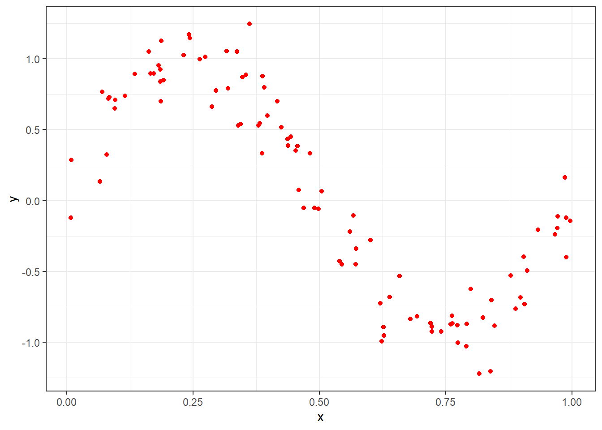
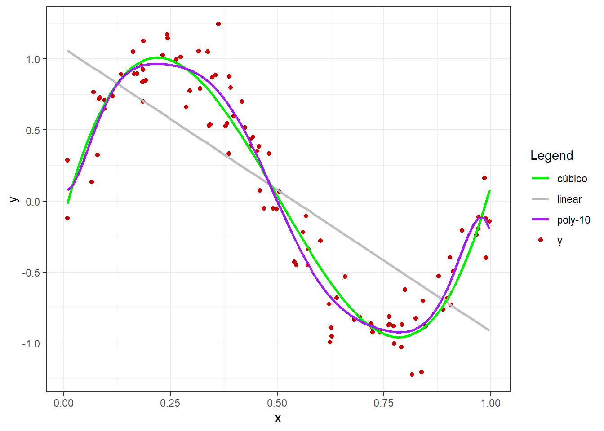
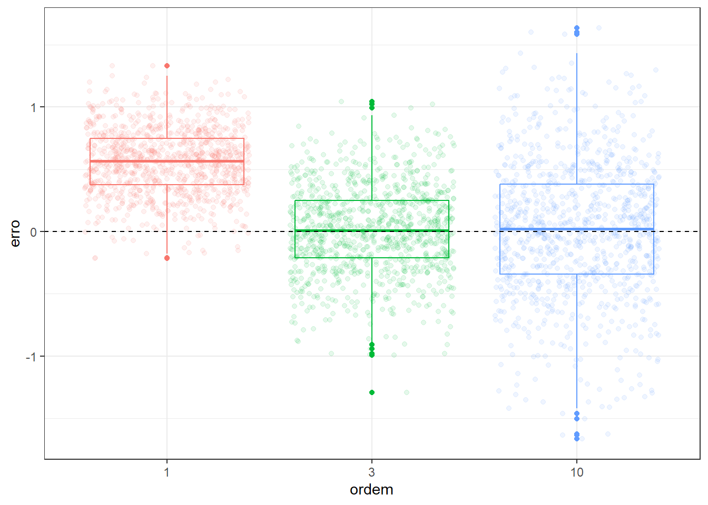
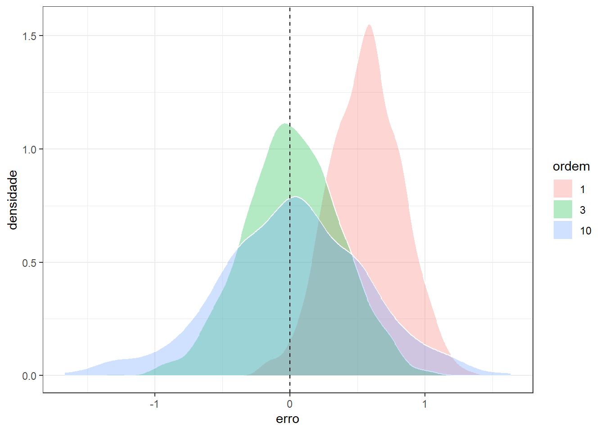
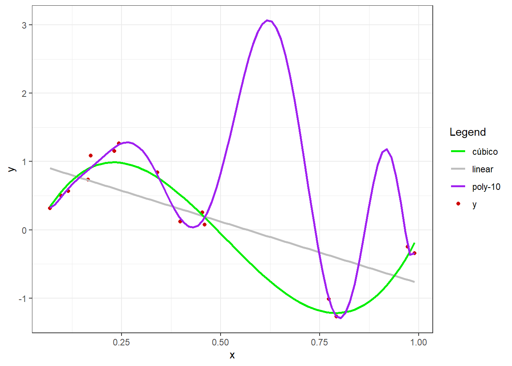
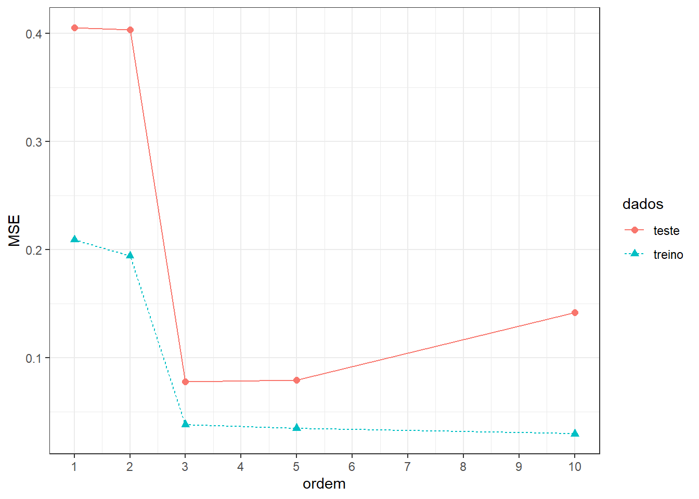

Conflito entre vício e variância no Aprendizado supervisionado
Conflito entre vício e variância
Seja uma variável regressora ou independente \(x \in \mathbb{R}\) e uma resposta ou variável dependente igualmente medida em uma escala contínua, \(y \in \mathbb{R}\).
Deseja-se aproximar uma função desconhecida, \(f(x)\), que relaciona \(y\) e \(x\). Tal aproximação pode ser feita minimizando uma função perda, \(L(y,f(x))\), que mede os erros de previsão.
A função perda mais comum para problemas de regressão é a função perda quadrática, conforme segue.
\[ L(y,f(x)) = (y-f(x))^2 \]
Seja um conjunto de dados disponível, \(D = {(x_1,y_1), (x_2,y_2), ..., (x_n,y_n)}\), conforme o observado graficamente a seguir. As observações da variável independente podem ser descritas em relação à função desconhecida adicionada de um termo de erro, \(y = f(x) + \varepsilon\), \(E(\varepsilon)=0\), \(Var(\varepsilon) = \sigma^2_\varepsilon\).
É possível decompor a esperança da função perda considerando um modelo estimado, \(\hat f(x)\), conforme segue.
\[ E[(y-\hat f(x))^2] = Var[\hat f(x)] + Vicio^2[\hat f(x)] + Var[\varepsilon] \]
Para um conjunto de dados disponíveis, \(D\), tem-se para o vício:
\[ \begin{aligned} Vicio_D[\hat f(x)] &= E_D[\hat f(x) - f(x)] = E_D[\hat f(x) - y + \varepsilon] \\ Vicio_D[\hat f(x)] &= E_D[\hat f(x)] - E_D[y] \end{aligned} \]
E para a variância:
\[ \begin{aligned} Var_D[\hat f(x)] &= E_D[(\hat f(x) - \hat f(x))^2] \end{aligned} \]
O erro associado às medições, \(Var(\varepsilon) = \sigma^2_\varepsilon\), consiste no erro irredutível. Este erro está associado à qualidade dos dados. Portanto sua variabilidade terá implicação no erro do modelo estimado.
Seja o ajuste aos dados disponíveis de três modelos de regressão com distintas complexidades, um linear, um cúbico e um modelo polinomial de décima ordem.
Tais modelos são da forma que segue:
\[ \begin{matrix} y_1 = \beta_0 + \beta_1x\\ y_3 = \beta_0 + \beta_1x + \beta_2x^2 + \beta_3x^3\\ y_{10} = \beta_0 + \beta_1x + \beta_2x^2 + \beta_3x^3 + \beta_4x^4 + ... + \beta_{10}x^{10} \end{matrix} \]
Os modelos são estimados por mínimos quadrados e plotados com os dados a seguir:

Tomando um valor arbitrário de \(x = x_0\), e \(M\) conjuntos distintos de observações futuras, \(d_1=(x_1,y_1)_1, ..., (x_n,y_n)_1\), \(d_2=(x_1,y_1)_2, ..., (x_n,y_n)_2\), \(\ldots, d_M=(x_1,y_1)_M, ..., (x_n,y_n)_M\), é possível medir o vício e a variância das estimativas obtidas por \(\hat f(x)\) para um \(x=x_0\) específico.


Pelos gráficos pode-se observar que o modelo linear apresenta maior vício e menor variância, enquanto o modelo polinomial de décima ordem apresenta menor vício, porém maior variância. Este exemplo ilustra o conflito entre vício e variância. Deve-se buscar um modelo que apresente equilíbrio entre ambas medidas.
A seguir também são tabelados valores de vício e variância dos modelos segundo a ordem ou complexidade entre os mesmos. Observa-se que o modelo de menor grau e, portanto, menor complexidade, apresenta alto vício, porém baixa variância. Já o modelo de maior grau, ou maior complexidade, apresenta baixo vício, porém alta variância.
| ordem | vicio2 |
|---|---|
| 1 | 0.3134804 |
| 3 | 0.0002074545 |
| 10 | 0.0002207692 |
| ordem | var |
|---|---|
| 1 | 0.07020973 |
| 3 | 0.1268333 |
| 10 | 0.2922431 |
Em casos onde o número de observações é baixo o conflito entre vício e variância fica mais claro. Considerando o exemplo plotado a seguir, pode-se observar que enquanto o modelo linear apresenta um baixo ajuste, o modelo polinomial de décima ordem apresenta um sobreajuste, uma vez que praticamente interpola os dados disponíveis. Este último apresentará um ajuste muito além do real, uma vez que sua capacidade não se confirmará para dados futuros.

A seguir apresenta-se o erro ou valor da função perda de tais modelos para dados de treino e dados futuros.

Pode-se observar que para os dados de treino, à medida que se aumenta a complexidade do modelo ajustado o erro diminui. Entretanto, o mesmo não acontece para os dados futuros ou de teste do modelo.
Quando um modelo apresenta alto erro tanto para os dados de treino quanto para os dados de teste, ele é considerado um modelo com baixo ajuste. Quando um modelo apresenta baixo erro para os dados de treino, mas alto erro para os dados de teste, ele é considerado um modelo com sobreajuste. É importante diagnosticar o sobreajuste uma vez que o bom ajuste aos dados de treino pode dar a ilusão de um modelo perfeito, porém, a avaliação do modelo em dados futuros confirma a dificuldade de generalização deste tipo de modelo.
O melhor modelo seria aquele que apresenta mais proximidade entre os erros para os dados de treinamento e teste, que, no exemplo dado, seria o de terceira ordem.
Referências
Bishop, Christopher M., and Hugh Bishop. “Deep learning: foundations and concepts.” (2024).